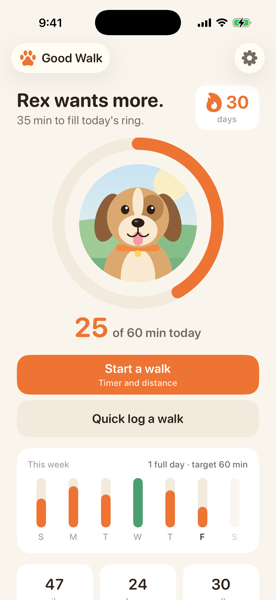
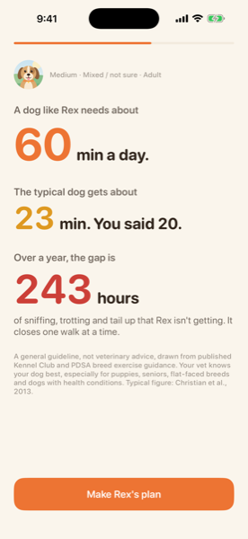
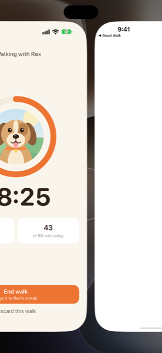
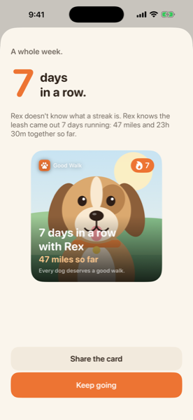

Every dog deserves a good walk.
Dog walk tracker with a daily streak.
Good Walk is a dog walking app for iPhone. Your dog needs a walk every day; Good Walk makes it a streak. A daily walk target for your dog, one tap from the reminder, and their photo on everything. No collar, no map, no account.
How the dog walking streak works
One question a day. That's the whole habit.
Tell it about your dog, once.
Name, photo, size, breed type and age. Good Walk suggests a daily walk target in minutes. It's a general guideline, and you can change it.
Tap once a day.
At 5:30pm (or whenever you pick) your phone asks "Has Rex had a walk today?" Tap Walked right from the notification, or start the walk timer and see the distance add up.
Watch it add up.
A ring that fills around your dog's photo, a streak of days, total miles and hours together. A card with your dog on it at 1, 3, 7, 14, 30, 60, 100 and 365 days. Post it or don't.
A walk timer, a dog walking log and a ring
Every walk lands in a log you can scroll back through. The screens below use Rex, our illustrated sample dog; yours will have your dog's photo.

Today's ring, around your dog 
Your dog's daily target 
Walk timer with distance 
A card at every milestone
What does your dog need?
Meet Rex: medium size, mixed breed, adult. His guideline is about
60 min a day
The typical dog gets about
23 min a day
At 20 minutes a day, Rex is missing
243 hours a year
Good Walk shows your dog's numbers, not Rex's. Try the calculator.
Walk targets are general guidelines based on size, breed type and age, drawn from published Kennel Club and PDSA breed exercise guidance. The typical figure is 160 minutes a week, the median across 29 studies of owners who walk their dog (Christian et al., 2013). They are not veterinary advice. Ask your vet what's right for your dog, especially for puppies, seniors, flat-faced breeds and dogs with health conditions.
The streak belongs to the dog
Fitness apps track you. GPS collars track where your dog is. Good Walk tracks the one thing you promised them.
Their name, their face.
On the reminder, in the ring, on the widget and on every card. It's not your streak. It's theirs.
A missed day is just a missed day.
The streak resets. The miles, the hours and the history stay. No sad-dog screens.
No collar, no map.
Distance comes from the step sensor in the phone you're already carrying. No hardware, no GPS, no battery to charge.
A card worth posting.
"47 miles walked with Rex", with your dog's photo on it. Share it when a milestone lands, or keep it to yourself.
Pricing
Try it free for 7 days. Cancel any time.
$19.99/ year
About $1.67 a month. 7-day free trial. Best value.
$3.99/ month
For trying it out one month at a time.
$29.99once
Lifetime. For people who hate subscriptions.
Every plan is the whole app
Your dog's daily target, the one-tap reminder, streaks, photo cards and the widget. No ads, no account, nothing leaves your phone.
Prices in US dollars; the App Store shows your local price. Subscriptions renew automatically until cancelled. See the terms of use.
Nothing leaves your phone
No account. No cloud. No location, ever. Your dog's profile, photo and every walk you log are stored on your iPhone and go when you delete the app. Distance uses the optional Motion & Fitness permission and is worked out on the device. The app may record anonymous usage events (like "onboarding completed"); they carry no names, photos or identifiers. The details are in the privacy policy.
Dog walking guides
Short, sourced, and honest about what is a published guideline and what is our own rounding.
- How much exercise does my dog need?
The Kennel Club and PDSA exercise bands by size and breed type, plus a calculator that uses the app's exact formula.
- How long should I walk my dog?
Turning a daily total into actual walks, and what the guidance says about puppies, older dogs and flat-faced breeds.
- How to keep a dog walking log
What to write down, paper versus app, and streak rules that survive a missed day.
Questions about Good Walk
Straight answers. If yours isn't here, email support@getgoodwalk.app.
Is Good Walk veterinary advice?
No. Good Walk is a habit tracker. The walk target is a general guideline from your dog's size, breed type and age, and you can change it at any time. Your vet knows your dog; ask them, especially for puppies, seniors, flat-faced breeds and dogs with health conditions.
How much exercise does my dog need?
It depends on the dog. The Royal Kennel Club and PDSA publish exercise guidance by breed, from up to 30 minutes a day to more than 2 hours. Good Walk turns your dog's size, breed type and age into one daily number you can adjust. The bands and a calculator are in our dog exercise guide. It is general guidance, not veterinary advice.
Does Good Walk track my location?
No. Good Walk never asks for location and has no map. Distance comes from your phone's step sensor (the Motion & Fitness permission), it's worked out on your phone, and it's optional. Say no and the app estimates distance from how long you walked.
What counts towards the dog walking streak, and what if I miss a day?
Any day with at least one logged walk keeps the streak. Days where you hit the full target are counted separately as goal days. Today doesn't break the streak until it's over. Miss a day and the streak starts again at the next walk; your miles, hours, walks and history don't go anywhere.
Do I need a GPS collar or a tracker?
No. Just your iPhone. Tap "Walked" from the reminder, quick-log some minutes, or run the walk timer with your phone in your pocket.
Where does my dog's photo go?
Nowhere. It's saved on your phone and shown in the app, the widget and the cards you choose to share. There's no account and no server.
How much does Good Walk cost?
It's free to try for 7 days on the yearly plan. After that it's $19.99 a year, $3.99 a month, or $29.99 once for lifetime access. Subscriptions are billed by Apple and you can cancel any time in your App Store settings.
Does it work with more than one dog, or on Android?
One dog, on iPhone, for now. If you need more dogs or an Android version, tell us at hello@getgoodwalk.app; requests move things up the list.
Walk safely. You know your dog, the weather and the road better than an app does; you're responsible for your dog and yourself on every walk.
Start your dog's streak
Good Walk for iPhone. Free for 7 days, then $19.99 a year.